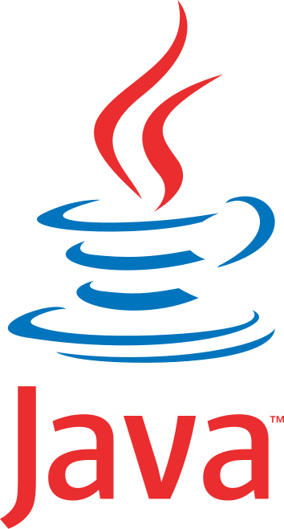
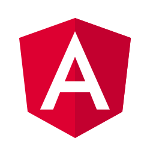

À propos de moi
Concepteur développeur en devenir, je recherche une alternance pour réussir la formation Développeur Fullstack Java Angular de Human Booster.
Je dispose d'une L2 math-info-physique, option informatique ainsi que d'un master de philosophie. C'est un parcours très atypique et c'est aussi
cela qui fait ma particularité.
Un pied aussi bien dans la science que dans la philosophie et l'éthique, mon parcours m'a permis de mêler logique, programmation et réflexion
sur l'intelligence artificielle. Je dispose d'une grande curiosité, d'une culture littéraire et scientifique large et d'une grande adaptabilité
Actuellement contractuel de la fonction publique dans les facultés de médecine et de pharmacie, j'exerce la fonction de référent fonctionnel des applications
de scolarité.
Ce travail, bien que ce ne soit pas un métier de développeur, est tout de même ancré dans l'informatique et développe des compétences en analyse, en travail
d'équipe, en pédagogie et en adaptabilité, des compétences importantes qui seront transposables pour les métiers de l'IT.
Passionné par la culture et en particulier internet et les jeux videos, le numérique à toujours eu une place prépondérante dans ma vie. Aujourd'hui j'aspire
travailler dans ce domaine afin d'apporter ma contribution à ce monde que j'aime tant. J'aimerais donc terminer mon cursus informatique dans les meilleurs
conditions.
Pourquoi pas avec vous ?
L'école Human Booster
Human Booster est une école de formation créée en 2007 et proposant diverses formations, notamment en alterance. Leur volonté est de former des
professionnels autonomes et adaptables capables de répondre aux attente des entreprises. Leur formations s'adaptent donc aux besoins du marché.
Une autre de leur particularité est que leur formation en alternance débute par un BootCamp de septembre à décembre, avant de commencer
l'alternance en janvier.
C'est pour cela que j'ai choisi cette école. J'estime que la formation de développeur Fullstack en alternance donnant accès au titre de Concepteur développeur
d'applications est le meilleur moyen de compléter mon cursus informatique et de débuter dans les meilleurs conditions ma nouvelle carrière.
→ Consulter la formation Human Booster
Parcours
Les commencements en mathématiques, informatique et physique
Deux années de licence math-info-physique à l'université de Limoges. J'y ai acquéri des bases solides en algorithmique, programmation et logique.
Cette licence se concetrait sur les sciences de l'ingénieur. Cela m'a permis de faire mes premiers pas dans la programmation, tout en gardant un enseignement solide en physique et mathématiques. J'y ai notamment appris le langage C, l'algorithmique, le SQL et la gestion de bases de données. J'ai également eu l'occasion de découvir plus en profondeur le fonctionnement des ordinateurs et plus précisément des processeurs.
L'école d'ingénieur informatique
Une année à l'école d'ingénieur informatique ISIMA. J'y ai poursuivis mon cursus ingénieur, en particulier sur l'aspect informatique
J'ai poursuivis à ISIMA, école d'ingénieur informatique, car j'ai voulu d'avantage m'axer sur l'informatique.
J'avais pour but de me professionnalisé dans le développement logiciel.
Mais, au cours de cette première année, j'ai traversé une période difficile ― des problèmes de santé ainsi qu'une perte de sens
m'ont amené à me remettre en question personnellement. J'ai donc pris la décision, difficile et risquée, de me retirer pour mieux me recentrer.
La philosophie, un périple intellectuel
Licence et Master de philosophie à l'Université Clermont Auvergne et à l'Université de Lorraine
Je me suis réorienté dans un cursus de philosophie qui a été passionnant. Cela n'a pas été un renoncement à la science et au numérique, au contraire !
J'ai pu y approfondir mes questionnements et découvrir des aspects de la science que ne soupçonnais pas.
L'informatique et le numérique sont restés au coeur de mes préoccupations. Je me suis d'ailleurs spécialisé en philosophie de l'esprit.
J'ai pu explorer les sujets de la conscience humaine, de la raison et de l'intelligence artificielle, des sujets aussi passionnants que majeurs
à l'époque actuelle.
Retour au concret : référent à l'université
Depuis janvier 2025 je travail à la faculté de médecine de l'UCA en tant que référent fonctionnel pour le logiciel de scolarité Pégase. Ce poste ma place au coeur du déploiement du nouvel outil de gestion des données étudiantes, sans relever pour autant du développement informatique pur. En réalité mon rôle consiste en :
- tester les fonctionnalités du logiciel à partir de cas réels ;
- rédiger des comptes-rendus pour signaler les incohérences, les bugs ou les obstacles à l'usage ;
- accompagner les équipes administratives dans leur prise en main de l'outil, à travers des formations et de la documentation.
Mon rôle et de participer au déploiement du nouveau logiciel de scolarité des universités PEGASE. Je teste les nouveaux modules des différents livrables avec les données existantes des étudiants. Pas de programmation, certes, mais du test et des comptes rendus afin de savoir s'il sera possible de déployer PEGASE pour la rentrée universitaire 2026. Mon rôle est important car je suis en charge des facultés les plus complexes en matière de maquettes de formations et de spécifités de contrôles et de règles de calcul. Si PEGASE marche pour la les facultés de médecine et de pharmacie alors il marchera pour toutes les autres formations. C'est donc en grande partie mon feu vert qui déterminera le déploiement ou non du logiciel à l'Université Clermont Auvergne. Avec ce poste, je consolide mes compétences en travail d'équipe, en pédagogie et en adaptabilité, en communication, en rédaction et en analyse technique. Je garde un pied dans le numérique mais j'aspire à plus.
L'ambition du développement web
Fort de ce parcours hybride, je désir ardemment me consacrer pleinement dans le développement et en particulier le développement web. C'est pour cela que je souhaite terminer mon cursus informatique. J'aimerais boucler la boucle ! C'est pour cela que je veux me former en alternance au métier de concepteur développeur d’applications avec l'école Human Booster et peut-être avec vous. Je construis actuellement mon portfolio pour mettre en valeur mes compétences techniques et ma démarche. Mon premier projet est le site que vous êtes actuellement en train de consulter. En espérant qu'il est aussi agréable à regarder qu'à lire !
Compétences
Langages de programmation
 HTML5
HTML5 CSS
CSS-  Java
 Python
Python C (notions car pratiquées en contexte universitaire)
C (notions car pratiquées en contexte universitaire)
Frameworks
- Angular (familiarisation en cours)
Outils de développement
 Visual Studio Code
Visual Studio Code Git
Git GitHub
GitHub
Autres outils
.svg) Suite Microsoft Office (Word, Excel, PowerPoint)
Suite Microsoft Office (Word, Excel, PowerPoint) Zotero (gestion bibliographique)
Zotero (gestion bibliographique)
Compétences transversales
- Adaptabilité
- Autonomie
- Rigueur
- Communication écrite et orale
- Curiosité
- Esprit critique
Projets et portfolio personnel
Projet Profan ISIMA
Durant mon année d'étude à l'ISIMA, j'ai participé à un projet de groupe nommé Profan.
Le but était de créer différents projets en liens avec le pôle plurimédia du lycée Lafayette de
Clermont-Ferrand. Le projet que mon équipe avait à réaliser consistait en un logiciel de Gestion
de Production Assistée par Ordinateur afin de faciliter la gestion des commandes effectuées auprès
du lycée.
J'ai eu donc l'opportunité de travailler avec un élève de BTS et un élève en bac professionel afin de
mener à bien le projet. Avec leur explications et conseils, j'ai crée une base de donnée en
en SQL avec phpMyAdmin sur la base du modèle entité-association, pour gerer les commandes mais
aussi les comptes utilisateurs de l'application.
→ Visionner la modélisation phpMyAdmin de la
base de donnée
Mes coéquipiés ont décidé du design du site et nous avions commencé à le mettre en place.
Cependant, nous n'avons malheureusement pas eu le temps de mener le projet à son terme. Le but assumé d'ISIMA
était de nous faire apprendre par la pratique les langages du web qui nous n'avions pas étudié auparavent. Il
a donc fallut apprendre tout en concevant l'application. C'était très enrichissant mais cela à eu pour
conséquence qu'il n'était pas possible pour un unique développeur en apprentissage de finir le site en trois
mois, à raison d'une matinée de travail (les heures de cours alouées pour réaliser le projet) par semaine.
Malgré cela, ce fut une expérience enrichissante. Travailler au sein d'une équipe pluridisciplinaire a permis
de mettre l'accent sur la communication, le partage, la pédagogie et le travail d'équipe. Apprendre à
dévolopper une application via un pratique concrete a été égelement très bénéfique. C'est une des raisons pour
laquelle je souhaite aujourd'hui terminer mon cursus informatique via une pratique concrete dans un milieu
professionnel.
Bien que le projet n'ai pas abouti, il est possible de consulter le travail réalisé, le cahier des charges
ainsi que le rapport (écris à trois) sur le lien GitHub suivant :
→ Consulter les fichier du projet PROFAN
Site statique réalisé en HTML, CSS et JavaScript
Il s'agit du site que vous êtes en train de consulter! Il a pour but de présenter moi et mon projet pro, la formation en alternance de Human Booster, mon parcours, mes compétences et mes projets. Il s'agit d'une première version qui sera à l'avenir améliorée. J'ai réalisé ce site pour pratiquer et m'entrainer mais égelement pour démontrer certaines de mes compétences.
Veille théorique et pratique
Dans l'optique de reprendre convenablement la programmation et de me préparer au BootCamp de la formation de Human Booster, j'ai réalisé une veille théorique sur internet notamment sur le site W3Schools. Sur ce site il est possible de voir en détail les spécificités de chaque langages ou Frameworks, de s'entrainer via des quizz et de passer, si on le souhaite, des certifications payantes. N'ayant pas de certifications, voici ma progression sur le site :

Je m'entraine aussi activement sur le site FreeCodeCamp.
Sur ce site nous avosn également un apprentissage théorique, mais celui-ci est mêlé à une application directe de ce que l'on nous apprend.
C'est un site très ludique et idéal pour apprendre. Vous pouvez consulter mon profil afin de voir ma progression et les certifications que j'ai
ou aurais.
→ Consulter mon profil FreeCodeCamp
Réalisation d'une application complète : site pour un photographe
Un gros projet que j'aimerais réaliser ce serait un site pour un ami photographe. Ce dernier à besoin d'un endroit en dehors des réseaux sociaux pour publier ses oeuvres et je me suis alors proposé, moi et un ami développeur web frontend, de le créer. Le lien du site ainsi que mon rapport d'expérience seront affichés ici.
Mémoire de recherche sur l'intelligence artificielle
Lors de mon master en philosophie, je me suis spécialisé en philosophie de l’esprit, un domaine qui s’interroge sur la nature
de la pensée humaine. Cette réflexion m’a conduit à explorer un modèle particulier de l’esprit, défendu par les philosophes
McDowell et Putnam, et connu sous le nom de naturalisme modéré.
Partant de cette approche, je me suis posé une question simple mais ambitieuse : une intelligence artificielle peut-elle
reproduire un esprit humain ? Pour y répondre, j’ai analysé les deux grands types d’IA existants — les IA symboliques et
les IA connexionnistes — en examinant leur fonctionnement, leurs capacités, mais aussi leurs limites fondamentales.
Mon mémoire montre pourquoi, selon le modèle de l’esprit que j’étudie, les IA actuelles (et peut-être futures) sont incapables
de reproduire ce que nous appelons réellement « un esprit humain », à moins d’une condition qui, à ce jour, semble irréalisable.
Si ce sujet vous intrigue, vous pouvez lire ou feuilleter mon mémoire en le téléchargeant ici :
« Les IA rêveront-elles un jour de moutons électriques ? Putnam, McDowell et le projet d’une intelligence artificielle »
→ Télécharger le mémoire au format PDF.